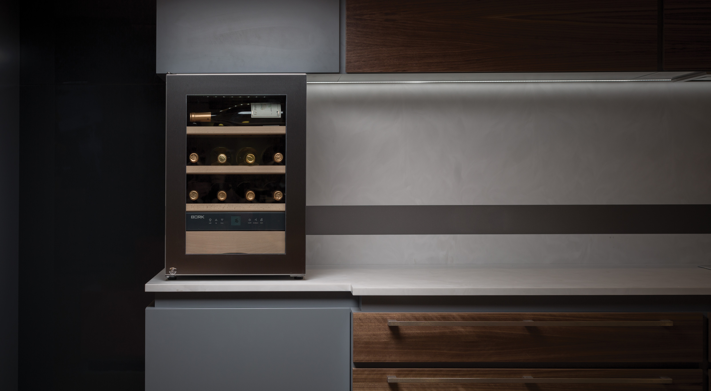
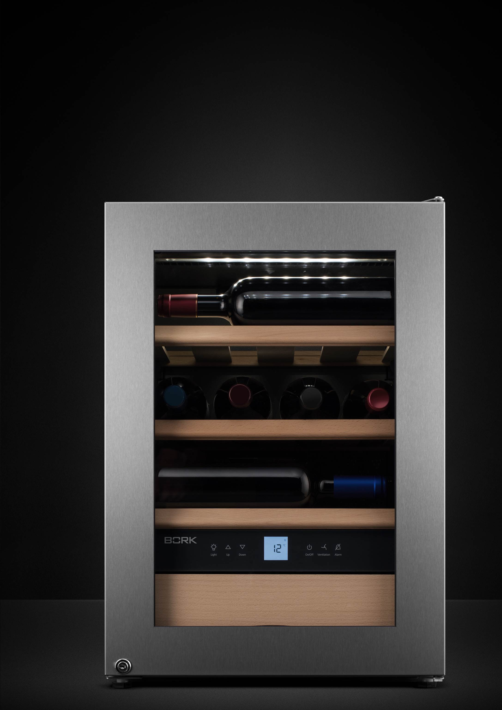
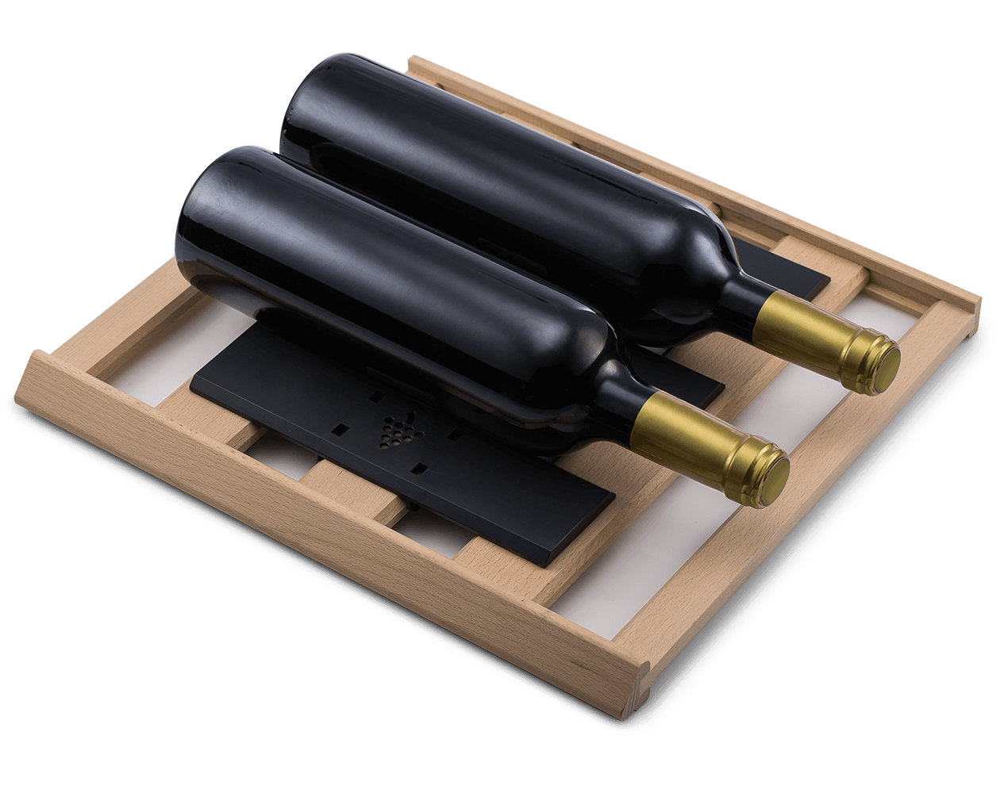
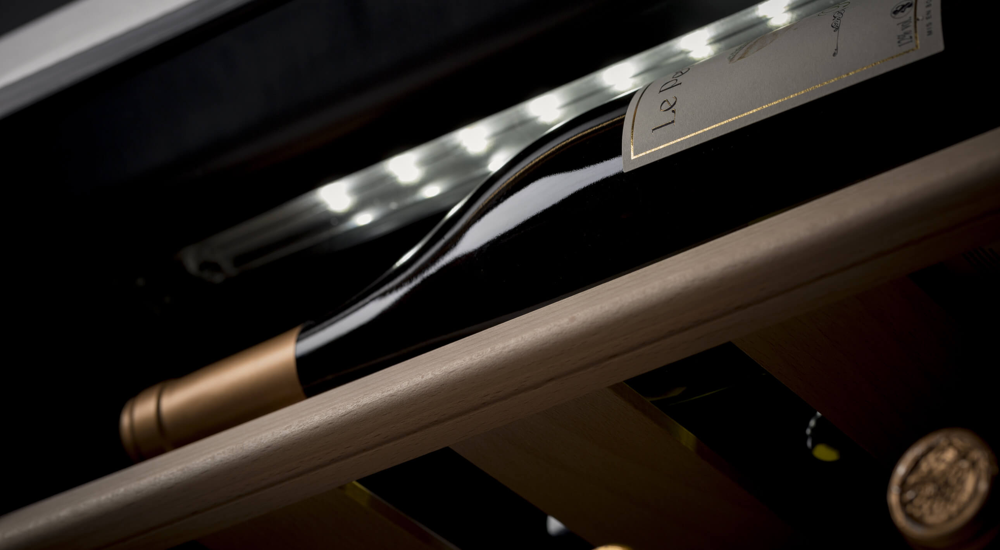
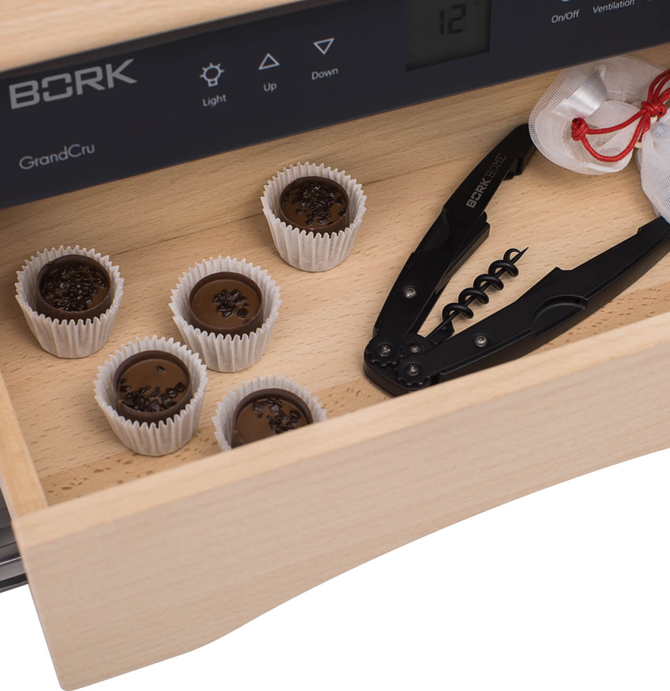
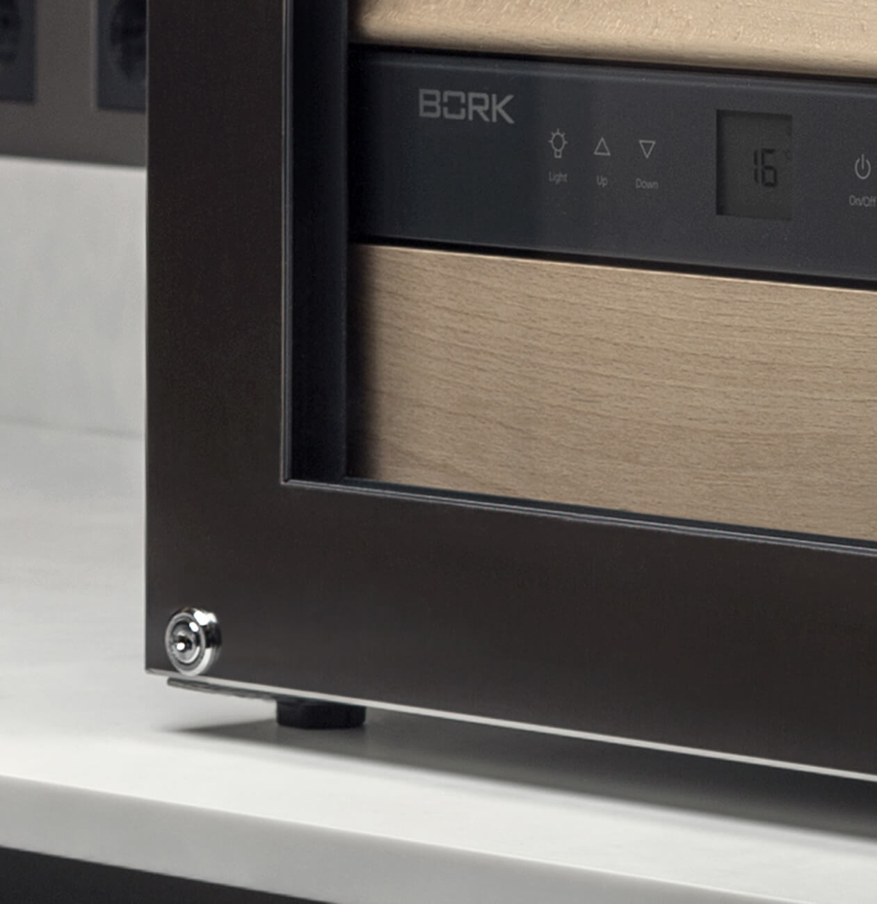
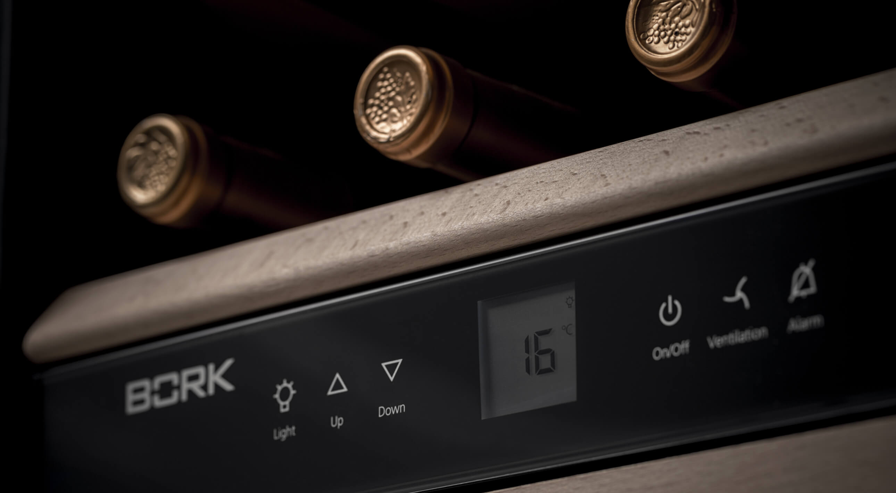
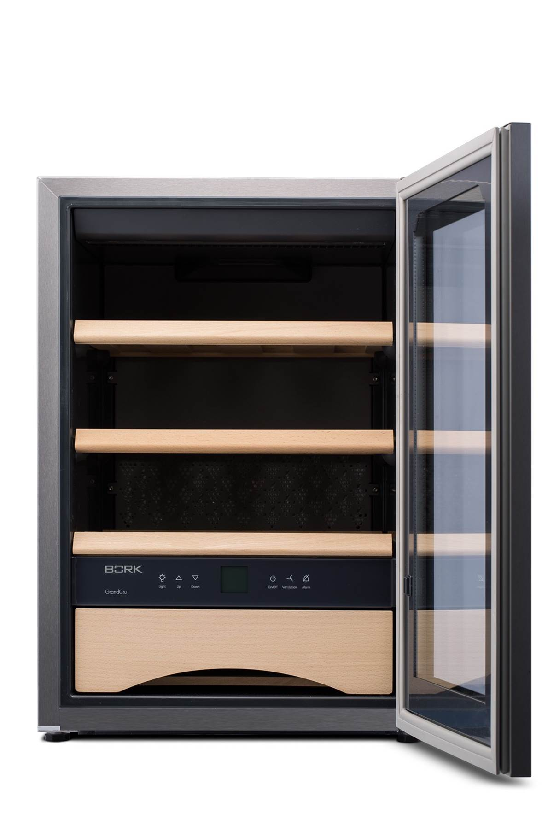

Винный шкаф Z700
Все функции винного погреба в одном компактном шкафу.
Лаконичный дизайн
Компактная и стильная модель Z700 отлично дополнит интерьер кухни, бара или гостиной, а прозрачная дверца и внутренняя подсветка позволят выбрать вино, не открывая шкаф.
Микроклимат винного погреба
BORK Z700 поддерживает оптимальную температуру в диапазоне: +5...+20°C и влажность воздуха, а также изолирует содержимое от воздействия солнечных лучей. Температура помещения для эксплуатации устройства должна быть +10...+32°C.
Бережное хранение
Бутылки должны лежать горизонтально. При таком положении пробка омывается вином и не рассыхается со временем, ведь если она станет сухой и внутрь вина попадёт кислород – вино испортится.
Отсутствие вибраций необходимо для стабильного вкуса напитка. В винном шкафе BORK Z700, используется компрессор с низким уровнем вибрации, а также полки изготовлены из бука, которые поглощают небольшие колебания.
В винном шкафу должен быть чистый воздух, ведь появление запаха может негативно сказаться на вкусе вина. В винном шкафе BORK Z700, для фильтрации воздуха используется угольный фильтр. Рекомендуем менять фильтр раз в год.
Ящик для аксессуаров
Благодаря специальному выдвижному ящику, расположенному в нижней части винного шкафа, все необходимые инструменты всегда иметь под рукой. Здесь можно хранить ингредиенты, помогающие раскрыться истинному вкусу вина: например, некоторые сорта сыра и шоколада.
Замок для защиты вин
На передней панели расположен специальный замок, ограничивающий доступ к напиткам детям и другим лицам.
Высокая энергоэффективность
Класс энергоэффективности А++ позволяет существенно сократить расход электричества, что особо ценится при многолетнем хранении вин.
Дополнительная информация

Три полки из натурального дерева
Количество температурных зон: 1
Контейнер для хранения шоколада и сладостей из натурального дерева
Фильтр из активированного угля
Вентилятор
Дверь с замком
Стеклопакет двери с УФ фильтром
Электронное управление
Звуковая сигнализация открытой двери
Оптическая и звуковая сигнализация неисправностей
Технические характеристики
Мощность 75 кВтч/год
Температура 5-20˚С
Вместимость 12 бутылок
Полезный объем 38 л
Класс энергоэффективности А++
Вес 29 кг
Срок гарантии 1 год
Климатический класс SN +10...32°С
Полки 2 шт.
Угольный фильтр Есть
Дисплей Есть
Технология дисплея Capacitive Sensors
Яркость дисплея 5 уровней
Предупредительный сигнал Есть
Ящик для аксессуаров Есть
Длина кабеля 2 м
Страна производства Австрия